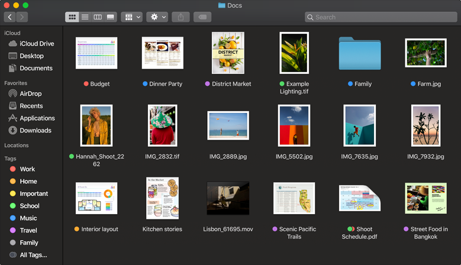

<!DOCTYPE html>
<html>
<head>
	<title>slider compare</title>
	<meta name="viewport" content="width=device-width, initial-scale=1.0">
	<style>
	.compare_block {
		/*postion: relative and absolute*/
		position: relative;
		margin: auto;
		/*what is inline-block?*/

	}
	.bottom {
		background-repeat: no-repeat;
		background-image: url(image_light_large.png);
		width: 779px;
		height: 442px;
	}
	.overlay {
		position: absolute;
		top: 0;
		left: 0;
		width: 50%;
		height:100%;
		overflow: hidden;
		background-image: url(image_darkmode_large.png);
		/*background-size: 779px 442px;*/
		/*z-index:9999;*/
	}
	#slider {
		position: absolute;
		top: 50%;
		width:calc(100% + 30px);
		left: -15px;
	}
	.partition {
		position: absolute;
		height: calc(100% + 40px);
		width:4px;
		background-color: #2377e2;
		top:-20px;
		left: 50%
		/*z-index: 4;*/
	}
	input[type=range] {
	  -webkit-appearance: none; /* Hides the slider so that custom slider can be made */
	  width: 100%; /* Specific width is required for Firefox. */
	  background: transparent; /* Otherwise white in Chrome */
	}
	input[type=range]:focus {
  		outline: none; 
  		/* Removes the blue border. You should probably do some kind of focus styling for accessibility reasons though. */
	}
	input[type=range]::-webkit-slider-thumb {
		-webkit-appearance: none;
		box-shadow: 1px 1px 1px #000000, 0px 0px 1px #0d0d0d;
		border: 1px solid #000000;
		height: 30px;
		width: 30px;
		border-radius: 3px;
		background: #ffffff;
		cursor: pointer;
		margin-top: -14px
	}
	
	</style>
	<script>
		// when is the script loaded: before DOM render! 		
		function handleChange() {
			// body...
			overlay = document.getElementsByClassName("overlay")[0];
			range = document.getElementsByTagName("input")[0];
			partition = document.getElementsByClassName("partition")[0];
			// console.log(overlay.style.width)
			overlay.style.width = range.value+'%';
			partition.style.left = range.value+'%';
		}
		
	</script>
</head>
<body>
	<!-- <h4>可根据需要，自主选择熟悉的明亮外观或是全新推出的深色模式。</h4> -->
	<div class="compare_block bottom">
		<div class="overlay">
			<!--  -->
			<!-- <span class="partition"></span> -->
		</div>
		<span class="partition"></span>

		<input type="range" id="slider" min="0" max="100" value="50" oninput="handleChange()">
	</div>

</body>
</html>